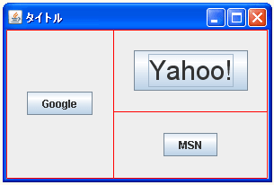

余分な領域の配分方法を設定する
デフォルトの設定では各コンポーネントを配置したグリッド全体はフレームやパネルの中央に配置されました。
今回設定を行う余分な領域とはコンポーネントなどが配置されているグリッド全体とフレームやパネルなどのコンテナとの間の何も配置されていない領域のことです。具体的には次の図のピンクの部分となります。
この余分な領域をどのコンポーネントに割り振るのかを設定する方法を確認します。水平方向の設定には「weightx」フィールドに設定し垂直方向の設定には「weighty」フィールドに設定します。
weightx public double weightx
余分の水平スペースを分配する方法を指定します。 グリッドバッグレイアウトマネージャーは、1 列のウェイトが 1 列のすべての コンポーネントの最大の weightx になるように計算します。結果のレイアウト が塗りつぶす必要のある領域の幅より小さい場合、余分のスペースが各列のウェ イトに比例して分配されます。ウェイトがゼロの列には、余分のスペースは分 配されません。 すべてのウェイトがゼロの場合、すべての余分のスペースがセルのグリッドと左 右両端の間に表示されます。 このフィールドのデフォルト値は 0 です。weightx には負の値を指定すること はできません。
weighty public double weighty
垂直の余分なスペースを分配する方法を指定します。 グリッドバッグレイアウトマネージャーは、1 行のウェイトが 1 行のすべての コンポーネントの最大の weighty になるように計算します。結果のレイアウト が塗りつぶす必要のある領域の高さより小さい場合、余分のスペースが各行のウェ イトに比例して分配されます。ウェイトがゼロの行には、余分のスペースは分配 されません。 すべてのウェイトがゼロの場合、すべての余分のスペースがセルのグリッドと上 下の両端の間に表示されます。 このフィールドのデフォルト値は 0 です。weighty には負の値を指定すること はできません。
引数にはコンポーネントに設定する重み付けの値をdouble型の値で指定します。
例として水平方向で考えてみます。
各コンポーネントに「weightx」を使って水平方向の重み付けを行います。同じ列に含まれるコンポーネントの場合は最大のコンポーネントの重み付けが有効となりますので2列目は「0.5d」が有効です。
余分な領域の配分方法はこの重み付けの比率に従って割り振られます。一番左の水色のコンポーネントは1.0d/(1.0d+0.5d+0.6d)=0.48となりますので余分な領域の約半分は水色に割り振られます。そして2列目と3列目には概ね1/4ずつの領域が割り振られることになります。
全てのコンポーネントの重み付けが「0」だった場合には、コンポーネント全体の左右(又は上下)にそれぞれ余分な領域が配置されます。これがデフォルトの場合の動作です。
実際の使い方は次のようになります。
JPanel panel = new JPanel();
panel.setLayout(new GridBagLayout());
JButton button1 = new JButton("button1");
JButton button2 = new JButton("button2");
GridBagConstraints gbc = new GridBagConstraints();
gbc.gridx = 0;
gbc.gridy = 0;
gbc.gridwidth = 1;
gbc.gridheight = 2;
gbc.weightx = 1.0d;
gbc.weighty = 1.0d;
layout.setConstraints(button1, gbc);
gbc.gridx = 1;
gbc.gridy = 0;
gbc.gridwidth = 1;
gbc.gridheight = 1;
gbc.weightx = 0.5d;
gbc.weighty = 0.0d;
layout.setConstraints(button2, gbc);
p.add(button1);
p.add(button2);
サンプルプログラム
では簡単なサンプルを作成して試してみます。
import javax.swing.*;
import java.awt.Font;
import java.awt.GridBagLayout;
import java.awt.GridBagConstraints;
import java.awt.BorderLayout;
public class GridBagLayoutTest3 extends JFrame{
public static void main(String[] args){
GridBagLayoutTest3 frame = new GridBagLayoutTest3();
frame.setDefaultCloseOperation(JFrame.EXIT_ON_CLOSE);
frame.setBounds(10, 10, 300, 200);
frame.setTitle("タイトル");
frame.setVisible(true);
}
GridBagLayoutTest3(){
GridBagLayout layout = new GridBagLayout();
JPanel p = new JPanel();
p.setLayout(layout);
GridBagConstraints gbc = new GridBagConstraints();
JButton button1 = new JButton("Google");
gbc.gridx = 0;
gbc.gridy = 0;
gbc.gridheight = 2;
gbc.weightx = 1.0d;
gbc.weighty = 1.0d;
layout.setConstraints(button1, gbc);
JButton button2 = new JButton("Yahoo!");
button2.setFont(new Font("Arial", Font.PLAIN, 30));
gbc.gridx = 1;
gbc.gridy = 0;
gbc.gridheight = 1;
gbc.weightx = 1.0d;
gbc.weighty = 1.0d;
layout.setConstraints(button2, gbc);
JButton button3 = new JButton("MSN");
gbc.gridx = 1;
gbc.gridy = 1;
gbc.weightx = 1.0d;
gbc.weighty = 1.0d;
layout.setConstraints(button3, gbc);
p.add(button1);
p.add(button2);
p.add(button3);
getContentPane().add(p, BorderLayout.CENTER);
}
}
上記をコンパイルした後で実行すると次のように表示されます。
今回は全てのコンポーネントの水平方向及び垂直方向に同じ重み付けを設定してあります。その為、水平方向及び垂直方向の余分な領域は各コンポーネントに均等に割り当てられています。実際にどのように配置されているのかを線を描くと次のようになります。

他のサンプルプログラム
ではもう一つ別のサンプルを試してみます。(ソースコードの表示は省略します)。
上記をコンパイルした後で実行すると次のように表示されます。
今度のサンプルでは水平方向の重み付けを1列目のコンポーネントに100％となるようにしました。その為、水平方向の余分な領域は全て1列目のコンポーネントに割り当てられています。
垂直方向の重み付けは2列目の1行目にあるコンポーネントを2に対して2行目のコンポーネントを1にしました。よって垂直方向の余分な領域は全体の2/3が1行目のコンポーネントに割り当てられ全体の1/3が2行目のコンポーネントに割り当てられます。

( Written by Tatsuo Ikura )

著者 / TATSUO IKURA
初心者～中級者の方を対象としたプログラミング方法や開発環境の構築の解説を行うサイトの運営を行っています。